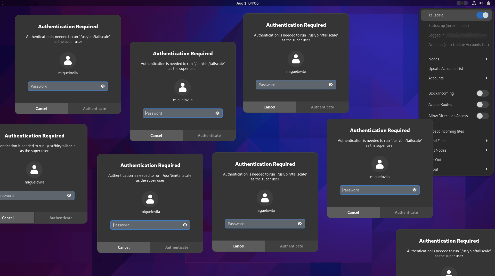

A Seamless Tailscale Experience: Bypassing Password Prompts
If you, like me, use Tailscale daily, you’ve probably felt the irritation of being prompted for a password every time you tweak a setting. Whether it’s switching exit nodes, changing accounts, or adjusting other settings, those password prompts can be realy annoying. Let’s change this behavior.

Why Does Tailscale Ask for Root Privileges?
Tailscale isn’t trying to upset you. It changes the network configuration of the system: the routing table, the DNS servers, etc. These tasks require root privileges.
The Password-Free Solution
Fortunately, sudo allows us to configure which commands can be executed without a password by using the NOPASSWD directive. We can use this feature to allow the sudo tailscale command to be executed without a password.
And if you’re using the “Tailscale Status” GNOME extension, you’ll need to adapt its source code in order to avoid the password prompt. (Nothing too complicated, don’t worry).
Step-by-Step Guide
Read all the steps before doing anything, so you know what you’re doing. Do it at your own risk, I’m not responsible for any damage you may cause to your system.
1. Edit the sudoers file
- Launch a terminal and type
sudo visudo. If you’re more comfortable with another text editor, likenano, use theEDITORenvironment variable:EDITOR=nano sudo visudo. - At the end of the file, insert the lines below, replacing
<username>with your actual username:
<username> ALL=NOPASSWD: /bin/tailscale
<username> ALL=NOPASSWD: /usr/bin/tailscale
These lines let the user <username> run the sudo tailscale command without a password. If you want to allow all users to run the command without a password, replace <username> with ALL (this is not recommended).
WARNING: Always use
visudoto edit the sudoers file. If you edit it with a different text editor and make a mistake, you might get locked out of your system.
2. Adapt Tailscale Status source code
Because we can now run sudo tailscale without a password, we need to adapt Tailscale Status to use sudo when executing tailscale.
- Find the extension’s source code. It’s either in
~/.local/share/gnome-shell/extensions/tailscale-status@maxgallup.github.comor/usr/share/gnome-shell/extensions/tailscale-status@maxgallup.github.com, depending on your installation type. - Inside the extension folder, open
extension.jsand using the find and replace tool, replace all occurrences ofpkexecwithsudo. - Save and reboot GNOME Shell. For Xorg, hit
Alt+F2and typer. For Wayland, log out and log back in.
NOTE: You might need to re-do this step after updating the extension.
Wrap-Up
There you have it! A smoother, password-prompt-free Tailscale experience.